CASE FILE Nº 02/04
CLIENT — SHAREFILE
PERIOD — 2023 → NOW
STATUS — LIVE
ShareFile outgrew
its navigation.
ShareFile grew from file sharing into full work management — requests, signatures, tasks, projects — but its information architecture stayed frozen in the file era. Customers rely on work arounds just to bridge navigation gaps. This is the widest brief I've owned here: re-ground the product's IA, rebuild the left navigation, modernise and standardise the page patterns everything sits on.
ROLE — LEAD PRODUCT DESIGNER
TYPE — PRODUCT-WIDE REDESIGN
SCOPE — IA · NAVIGATION · REPEATABLE PAGE PATTERNSTEAMS - RESEARCH · DESIGN · SALES · PM's
The problem, and the opportunity.
MODULE 01 / PROBLEM STATEMENT & HMW
PROBLEM STATEMENT — NAVIGATION STRUCTURE · CORE PAGE PATTERNS
As ShareFile evolves from file sharing into broader work management - inconsistent design patterns, confusing navigation and fragmented experiences have created real customer confusion. The cognitive load falls on customers — who struggle to navigate to their work, and to learn and adopt new features. So they build workarounds: Inbox, Filebox and Favorites re-purposed to bridge navigation gaps — slowing, feature adoption and overall usability.
OPPORTUNITY — HOW MIGHT WE
How might we establish recognition and familiarity through consistent page and pattern experiences — so customers spend their attention on their work, not on finding it?
WHY IT IS WORTH INVESTING IN — INDUSTRY EVIDENCE USED TO MAKE THE CASE
2–3×
Higher adoption of non-core features in top SaaS apps with strong IA.
PENDO BENCHMARK
+25–30%
User productivity and higher satisfaction reported with clearer IA.
SALESFORCE LIGHTENING REDESIGN
+17% · +10
Feature adoption and CSAT lift from better surfacing of features.
INTERCOM
Triangulate, then act.
MODULE 03 / DISCOVERY → SOLUTION DESIGN
Discovery: we reviewed ShareFile end to end and triangulated every data point we could get — customer usage, drop-offs, gaps, support feedback, pain points and needs — annotating the live product page by page against heuristic and experience principles.
Solution design: IA re-design concepts were then evaluated through a card sort study, an A/B + usability study and a content study before anything was committed to build. No single method got to decide; every problem below is backed by at least two.
QualitativeUSABILITY TESTING · CONTENT STUDY
QuantitativeA/B TESTING · CARD SORT · ADOPTION FUNNELS
BehavioralCLICK DATA · DROP-OFFS · SUPPORT & CSE SIGNALS
BenchmarkingHEURISTIC EVALUATION AGAINST INDUSTRY PATTERNS
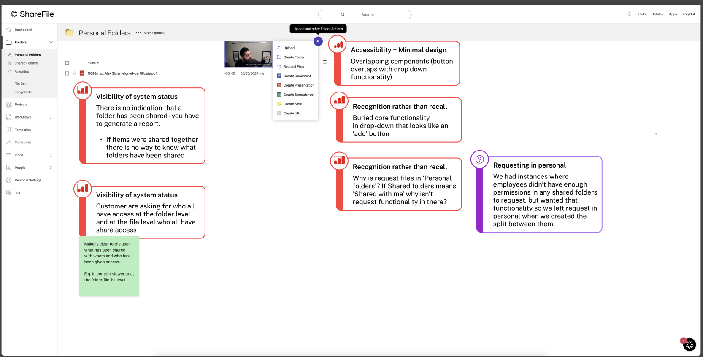
FIG. 03-A · ANNOTATION — HEURISTIC VIOLATIONS DISCOVERY ARTEFACT
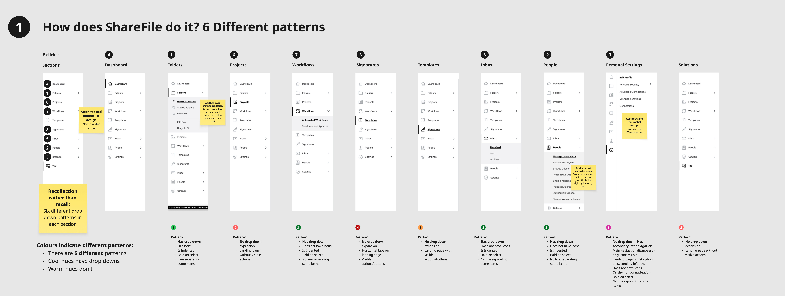
FIG. 03-B · INCONSISTENT LEFT NAVDISCOVERY ARTEFACT
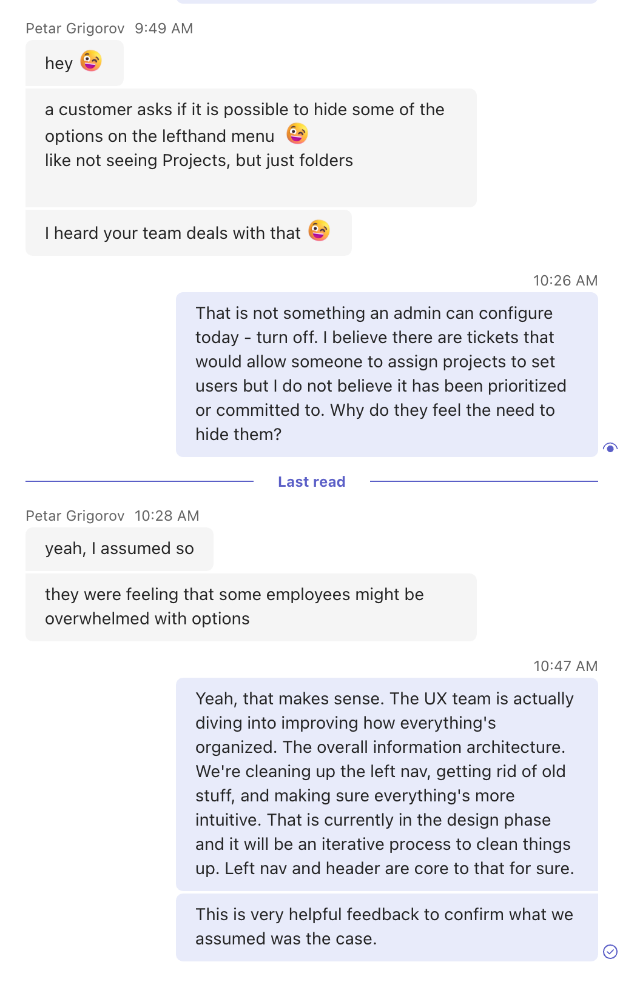
FIG. 03-C · "EMPLOYEES MIGHT BE OVERWHELMED WITH OPTIONS" — A CUSTOMER ASKS TO HIDE THE NAVCSE SIGNAL
The sharpest signals weren't in dashboards — they were in what customers did to survive the product. Support threads showed firms asking to hide parts of the navigation because their staff found it overwhelming. And when we ran contextual inquiries, we found owners maintaining entire shadow systems outside ShareFile — Trello boards and Excel sheets rebuilt by hand, just to see task progress across projects.
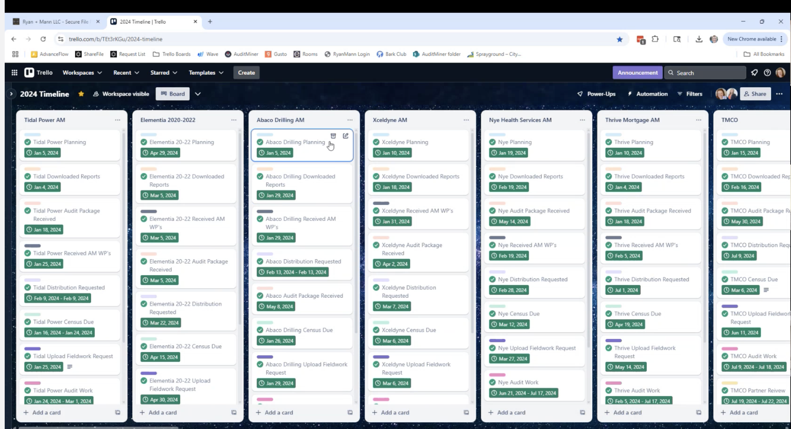
FIG. 03-D · ACCOUNTING FIRM — TRELLO BOARD TRACKING TASKS ACROSS PROJECTS
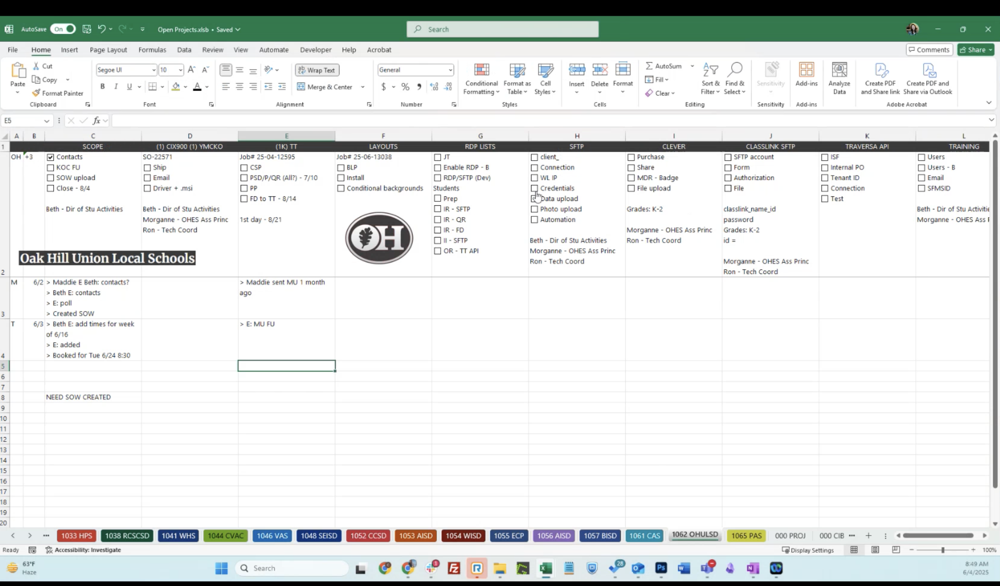
FIG. 03-E · CONSTRUCTION FIRM — EXCEL SHEET DOING THE SAME JOB
WHAT THE FUNNEL SAID — PROJECTS & TASKS ADOPTION, PRE-REDESIGN
0 days
AVERAGE TIME FROM PREMIUM TO FIRST PROJECT CREATED
0%
OF PROJECTS-PAGE VISITORS STAY OR PROCEED — 42% BOUNCE BACK TO FOLDERS
0%
OF CREATED PROJECTS NEVER GET A SINGLE TASK INSIDE THEM
0%
OF USERS RETURN TO CREATE A PROJECT BY MONTH 2 — 1% BY MONTH 3
Three problems, three tracks.
MODULE 04 / RESEARCH INSIGHTS → DELIVERY TRACKS
INSIGHT 01HIGH SEVERITY
Fragmented architecture
Tasks live in silos — document requests, information requests, signatures, to-dos — each with its own home, rules and statuses. The same lifecycle stage carries a different label in every feature, and don't aggregates across product.
JTBD — "I need to understand the progress I'm making on the tasks I work on, and those I've assigned to others."
→ RESOLVED BY TRACK 01 — INFORMATION ARCHITECTURE
INSIGHT 02LOW → CHRONIC
Six navigations in one
Heuristic evaluation found six different interaction patterns on a single, very cluttered left navigation — expanding sections, sub-pages, mixed hierarchies. Customers described it as overwhelming; some asked to hide it.
JTBD — "I need to understand where to go to start work, or to access the resources I need while working."
→ RESOLVED BY TRACK 02 — NAVIGATION
INSIGHT 03HIGH SEVERITY
Patterns that don't repeat
Every table view is designed differently. Core functionality hides in ambiguous "+" and "…" drop-downs that overlap page content at common resolutions. Title bars displace buttons page to page; nothing is responsive.
JTBD — "I need to feel familiar with ShareFile regardless of where I land and which capability I need."
→ RESOLVED BY TRACK 03 — PAGE PATTERNS
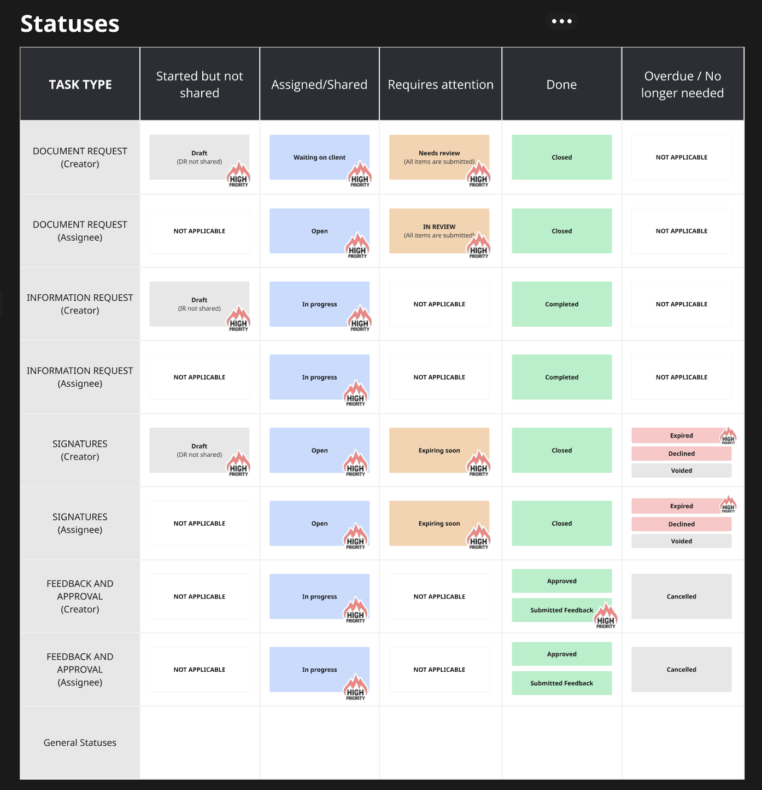
FIG. 04-A · ONE LIFECYCLE, MANY NAMES — STATUS AUDIT ACROSS TASK TYPESINSIGHT 01 EVIDENCE
FIG. 04-B · INCONSISTENT LEFT NAVDISCOVERY ARTEFACT
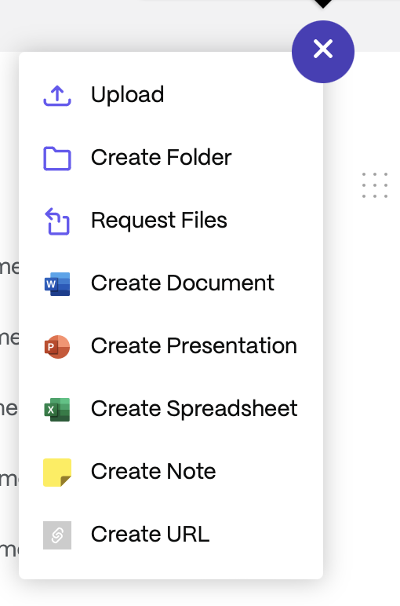
Eight unrelated verbs behind one unlabeled "+" — upload, create, request — a menu that looks like an add button and overlaps table filters at common screen sizes.
FIG. 04-C · BURIED CORE FUNCTIONALITYINSIGHT 03 EVIDENCE
Impact: the learning curve compounds. Customers must recollect each page's private pathway instead of recognising a shared pattern — and that frustration shows up in every study we ran.
Track 01 — one home for every task.
MODULE 05 / INFORMATION ARCHITECTURE — AGGREGATED TASKS
The IA fix started with a content exercise, not a screen: we mapped every object in ShareFile — clients, folders, requests, forms, signatures, to-dos, projects, payments — and decided, object by object, what aggregates, what takes templates, and what belongs to which section. That grid became the contract for the new architecture, and its first shipped expression is Tasks: document requests, information requests, signatures and approvals pulled out of their silos into one personal, prioritised view — with one status language across all of them.
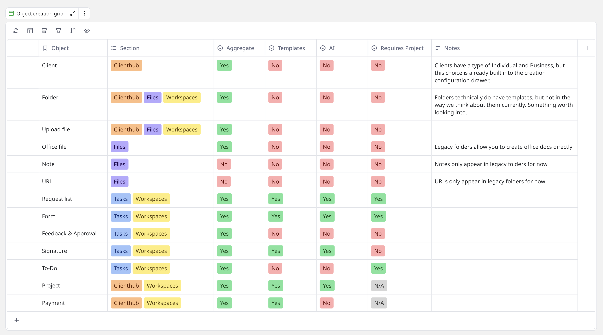
FIG. 05-A · THE OBJECT GRID — WHAT AGGREGATES, WHAT TEMPLATES, WHAT LIVES WHEREIA CONTRACT
NOW — FOUNDATION
All Tasks as a personal, focused view: document requests, information requests, signatures and feedback & approvals aggregated with unified statuses.
NEXT — USABILITY & VISIBILITY
More quick actions and creation flows, filters to narrow the list, and a dedicated space for task types that don't exist yet.
LATER — FLEXIBILITY
Quick-filter to help users narrow down to what they need.
FIG. 05-B · "NOW" AGGREGATE TASKS TOPROTOTYPE RECORDING
IMPROVEMENTS
- Centralized task management surfaces key actions and due items — improving discoverability & scalability.
- Enables flexibility to use tasks without requiring a project container.
- Reduces time spent navigating across the product.
- Gives users clearer insight into their responsibilities.
SOLUTION DESIGN & TESTING
87.5% success rate — usability testing showed people finding and completing test scenarios using this navigation pattern.
Two studies done to refine task labels & terminology.
Track 02 — a calmer UI lift.
MODULE 06 / NAVIGATION — SHIPPED IN PHASES
Six patterns had to become one — but a navigation used by every customer, every day, can't flip overnight. We phased the change so each release moved customers toward the new mental model without breaking the old one.
PHASE 01
Streamline
Personal and admin settings move off the sidebar into the avatar menu. Top-bar links consolidate, text links become icons, search becomes a true input field, and the refreshed logo lands.
DONE
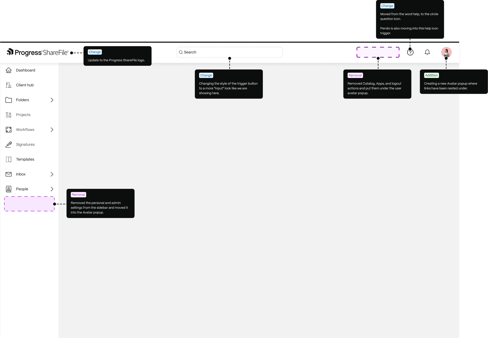
FIG. 06-A · PHASE 01 STREAMLINE — TOP BAR CONSOLIDATED, SETTINGS MOVE TO THE AVATARANNOTATED DESIGN
PHASE 02
Hierarchy & brand
Content layering separates nav from work. Tasks moves above Folders — priorities first. Sidebar and submenu styles unify, and a lavender surface replaces the grey wash as the brand evolves.
DONE
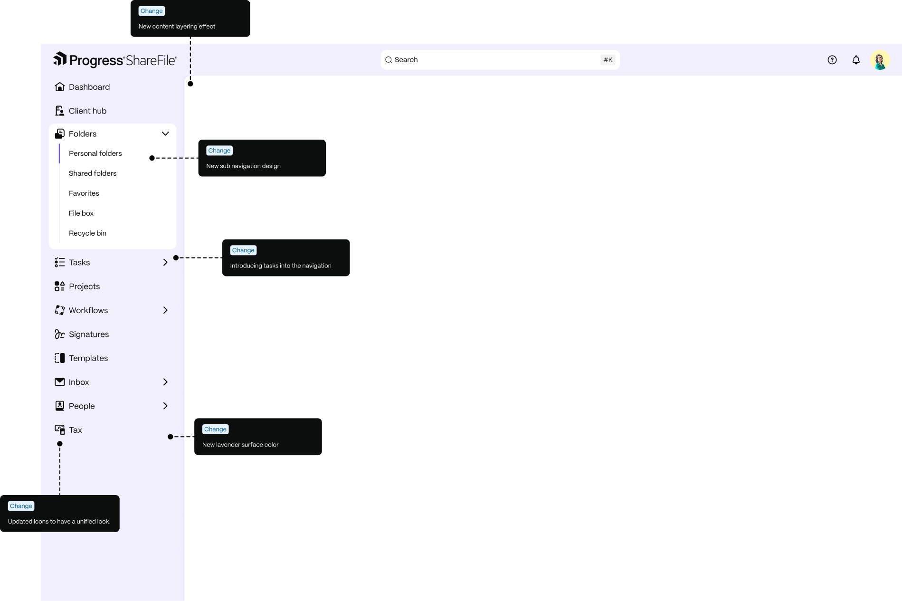
FIG. 06-B · PHASE 02 HIERARCHY & BRAND — LAYERING, SUB-NAV, TASKS, LAVENDER SURFACEANNOTATED DESIGN
PHASE 03
Workspace
A dedicated, visually separated area for solutions — the first step toward an organised workspace that keeps customers focused and in flow.
TESTING
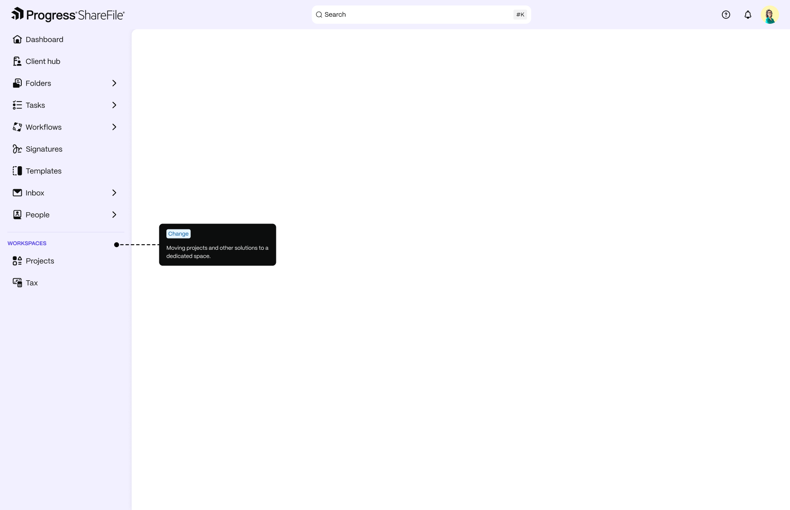
FIG. 06-C · PHASE 03 WORKSPACE — SOLUTIONS GET A DEDICATED, SEPARATED AREAANNOTATED DESIGN
PHASE FINAL
Focus
Related actions grouped in one place — an intentional experience that guides users to what matters most, on any screen size.
TESTING
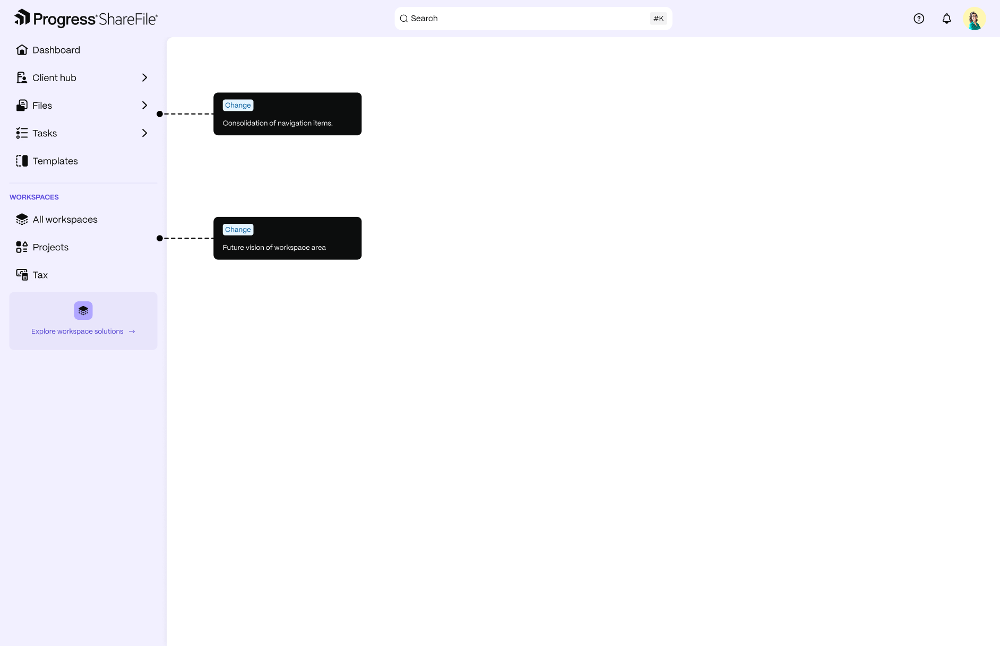
FIG. 06-D · PHASE FINAL FOCUS — NAV CONSOLIDATED, FUTURE VISION OF WORKSPACESANNOTATED DESIGN
IMPROVEMENTS
- Streamlines and clarifies navigation to reduce user frustration & increase engagement.
- Simplifies structure, aligning with user workflows.
SOLUTION DESIGN & TESTING
82% success rate — usability testing showed people finding and completing test scenarios using this navigation pattern.
FIG. 06-E · THE NEW NAVIGATION RESPONDING ACROSS WINDOW SIZESDESIGN RECORDING
Track 03 — recognition over recall.
MODULE 07 / PAGE PATTERNS — DESIGNED, DOCUMENTED, ENFORCED
Patterns only fix inconsistency if they come with rules. Each pattern below shipped with full documentation — where it appears, how it responds to window size, what can and cannot live in it, and in what order — so every team builds the same page the same way.
PATTERN A · TOP OF MOST SHAREFILE PAGES
The quick action bar
One bar, top of page, carrying the actions that used to hide in "+" menus — send for signature, request feedback, start from template. The button component is unique to this bar, with variants per object type, and documented rules decide which actions can appear and in what order.
IMPROVEMENTS
- Displays core actions and capabilities contextually — raising awareness and driving adoption of core features.
- Enhances discoverability & increases speed & efficiency.
FIG. 07-A · QUICK ACTIONS IN MOTION — CREATION FLOWS ONE CLICK FROM ANY LISTDESIGN RECORDING
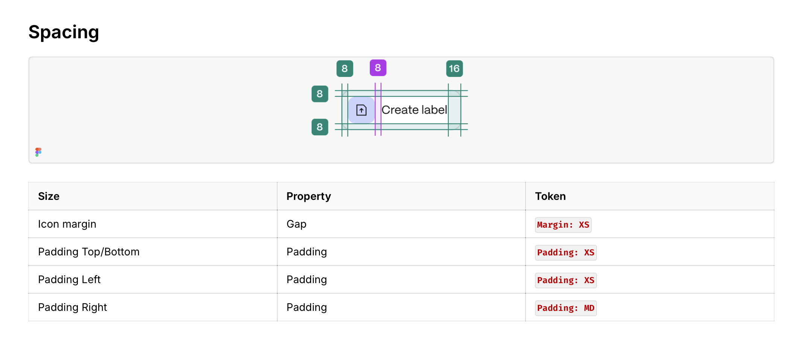
FIG. 07-B · BUTTON SPEC — SPACING MAPPED TO DESIGN TOKENSPATTERN DOCUMENTATION
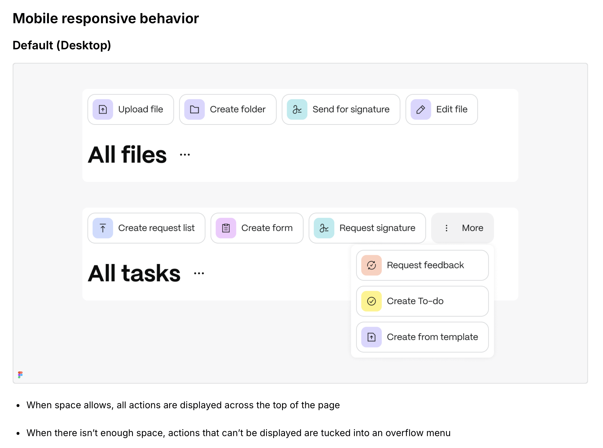
FIG. 07-C · VARIANTS PER OBJECT — WHAT MAY APPEAR, IN WHAT ORDERPATTERN DOCUMENTATION
PATTERN B · TOP OF EVERY LIST VIEW
The quick filter bar
Every list view gets the same bar: navigational quick filters on the left, the filter button and view switcher on the right. Select one row and it swaps to single-item actions; select ten and it swaps to bulk actions. The documentation answers the hard questions — what can be a navigational filter, what shows when nothing is selected, and how the bar collapses when the window narrows.
IMPROVEMENTS
- One bar for filtering, view switching and selection actions — the same on every list.
- Recognition over recall — customers read every list the same way.
FIG. 07-D · QUICK FILTERS ON THE CLIENT LISTDESIGN RECORDING
FIG. 07-E · MULTI-SELECT — THE BAR SWAPS TO BULK ACTIONSDESIGN RECORDING
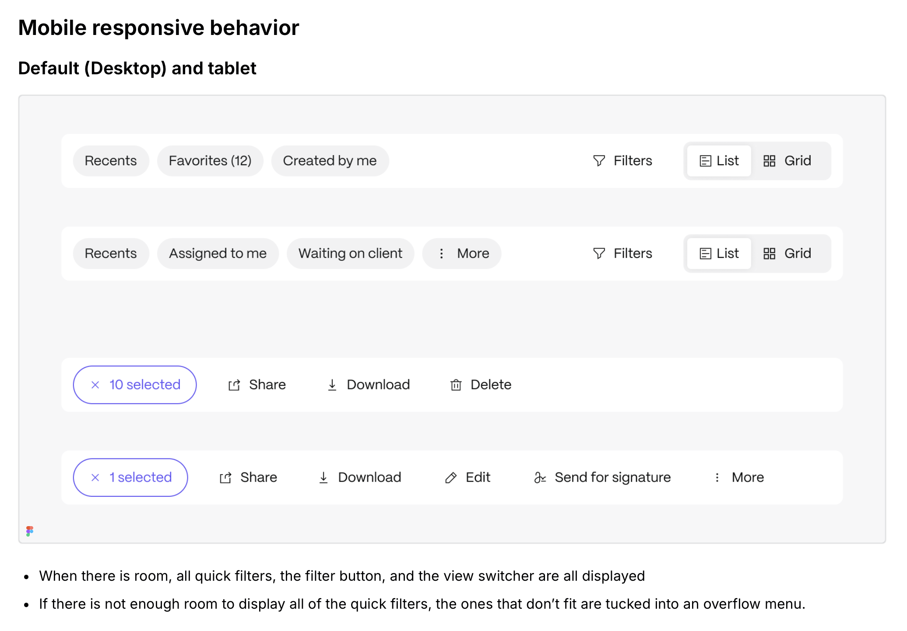
FIG. 07-F · RESPONSIVE RULES — OVERFLOWING FILTERS TUCK INTO A MENUPATTERN DOCUMENTATION
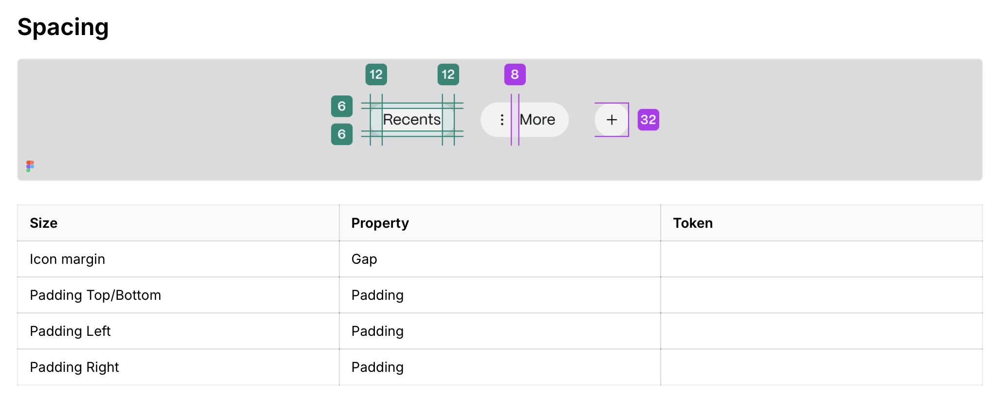
FIG. 07-G · NAVIGATIONAL FILTER BUTTON — FINALISED & DOCUMENTEDPATTERN DOCUMENTATION
PATTERN C · EVERY FIRST-TIME-USE PAGE
Empty & FTU states
An empty page used to be a dead end — a blank table and a lonely "+" button. The FTU pattern turns it into a starting line: it explains what the page is for, surfaces relevant templates contextually, and offers quick actions — start from a template, or create from scratch. The same structure repeats on every first-time-use page.
IMPROVEMENTS
- Exposing templates contextually in FTU pages increases learnability & reduces bottlenecks to active use.
- Provides flexibility to start work via templates & quick actions.
SOLUTION DESIGN
- Two studies done to refine task labels & terminology.
- Leverages patterns found in competitive research — FTU patterns and template structures.
FIG. 07-I · THE FTU EMPTY STATE — TEMPLATES AND QUICK ACTIONS INSTEAD OF A BLANK PAGEDESIGN RECORDING
Where it stands.
MODULE 08 / STATUS — SOLUTION DESIGN → BUILD
List patternLIVE
Quick action barLIVE
Contextual action barPARTIALLY LIVE
Left navigation — phases 1 & 2LIVE
Aggregated Tasks MVP — iteration #1CURRENTLY IN INTERNAL TESTING
This is deliberately a case study of work in flight: the research is done, designed and documented, and MVP iteration is running with PM and Engineering. The patterns are already outliving their first screens — every new feature that ships now starts from the documented list pattern, action bars and navigation model instead of inventing its own.
"We are continually faced with great opportunities brilliantly disguised as insoluble problems."
LEE IACOCCA — THE CLOSING SLIDE OF THIS REVIEW
HOW MUCH OF THIS WORK IS LIVE TODAY
~70% SHIPPED TO CUSTOMERS
50% — LIVE & COVERED IN THIS CASE STUDY
20% — LIVE, NOT INCLUDED IN THIS STUDY
30% — IN BUILD / PLANNED
WHAT THE FUNNEL SAYS NOW — PROJECTS & TASKS ADOPTION, POST-REDESIGN
22 days18 days
AVERAGE TIME FROM PREMIUM TO FIRST PROJECT CREATED
9%37%
OF PROJECTS-PAGE VISITORS STAY OR PROCEED
54%28%
OF CREATED PROJECTS NEVER GET A SINGLE TASK INSIDE THEM
5%22%
OF USERS RETURN TO CREATE A PROJECT BY MONTH 2 — 1% BY MONTH 3